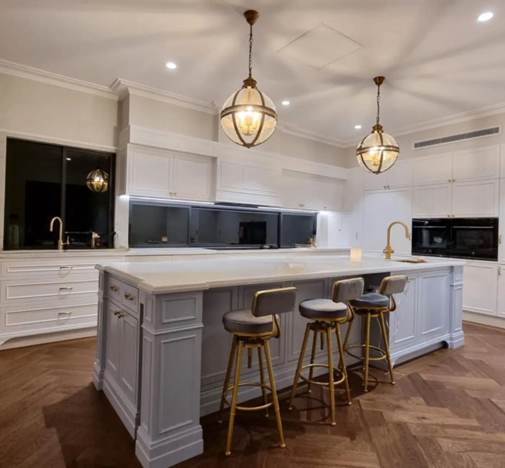

Custom kitchens
Custom kitchens in Sydney, built around how you cook and live.
From compact renovations to grand entertainers with butler's pantries, every Joinerycraft kitchen is designed for your space, made in our Sydney workshop and installed by our own team.
- Free online 3D designer
- 5.0★ on Google
- Made in our Chipping Norton workshop
- Lifetime workmanship guarantee
Options
Made your way.
Styles we build
- Modern handleless and fingerpull
- Shaker and Hamptons
- Two-tone and timber-look
- French provincial and heritage
- Outdoor BBQ kitchens
Benchtops & finishes
- Caesarstone and Quantum Quartz stone
- 20, 40 and 60 mm stone edges
- Timber and laminate tops
- Polyurethane, laminate and timber-look doors
- Over 100 colours and finishes
Storage & extras
- Islands with seating and waterfall ends
- Walk-in and butler's pantries
- Blum soft-close drawers and hinges
- Pull-out bins and pantry systems
- Plumbing, electrical and appliances coordinated
Layouts
Kitchen renovations and new kitchens, in any layout.
Replacing a tired kitchen or fitting out a new build or extension, we design it, make the cabinets in our workshop and install them, and we can coordinate plumbing, electrical and appliances. These are the kitchen layouts we build most:
L-shaped kitchens
Two walls of cabinets meeting in a corner. Great for open-plan rooms, and easy to add an island. Try it in 3D
U-shaped kitchens
Cabinets on three walls for the most bench space and storage, ideal for keen cooks. Try it in 3D
Galley kitchens
Two parallel runs that make the most of narrow rooms and keep everything within reach. Try it in 3D
Kitchens with an island bench
A stone island with seating, storage and an optional waterfall end, added to any layout. Try it in 3D
Design your kitchen in 3D, free
Choose a straight, L, U or galley layout, add an island, set your sizes and try real Polytec, Laminex and stone colours. Then send it to us for a quote.
Recent projects
A few we've built.
★★★★★"Best kitchen renovations company to go with. They made the whole process from start to finish so simple. Thank you again Joinerycraft team. Highly recommended."
★★★★★"Thank you so much Joinerycraft, you guys exceeded my expectations. I will definitely refer you to anyone looking at doing their kitchen. Love your work!"
FAQ
Good questions.
How long does a new kitchen take?
It depends on the size and the materials you choose, and we give you a timeline with your quote. Because the cabinetry is built in our workshop first, the time we spend in your home is kept short.
Can you handle plumbing, electrical and appliances?
Yes. We can coordinate plumbing, electrical and appliances so you are not juggling trades yourself.
Can I see stone and door samples?
Yes. Book a visit to our Chipping Norton showroom to see stone slabs, door finishes and Blum hardware in person.
How much does a custom kitchen cost in Sydney?
It depends on the size and layout, the door finish (board or polyurethane), the benchtop and the hardware. A compact board kitchen with laminate tops costs much less than a large polyurethane kitchen with a stone waterfall island. We give you a detailed quote after a free measure, and you can try options in our free 3D designer first.
Do you do kitchen renovations or only new kitchens?
Both. We renovate existing kitchens and build new kitchens for new homes and extensions, and we can coordinate plumbing, electrical and appliances so you are not juggling trades.
Can I design my own kitchen layout?
Yes. Our free online 3D designer lets you try straight, L-shaped, U-shaped and galley layouts, with or without an island, in real Polytec, Laminex and stone colours. Send it to us and we measure up and refine it with you.
Ready to start?
Free measure, 3D design and quote. Showroom visits by appointment in Chipping Norton.